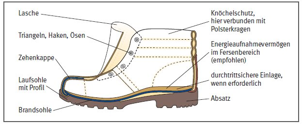
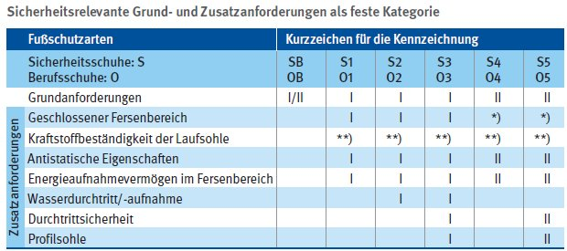
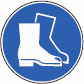

Gefährdungen
- Auf Baustellen und in ähnlichen Bereichen besteht insbesondere die Gefahr des Stolperns, Rutschens, Stürzens, Verbrennens, dass Nägel durch Schuhsohlen durchgetreten werden, dass schwere Teile herabfallen oder dass Kräfte auf das Fersenbein einwirken.
Auswahl/Benutzung
- Geeigneter Fußschutz ist entsprechend dem Ergebnis der Gefährdungsbeurteilung auszuwählen. Zu berücksichtigen sind hierbei auch ergonomische Aspekte, wie z.B. Passform, Schuhverschluss, Schuhform.
- Nur CE-gekennzeichnete, baumustergeprüfte Produkte bereitstellen/benutzen.
- Fußschutz vor der Benutzung durch Inaugenscheinnahme prüfen und ggf. festgestellte Mängel melden. Nicht ordnungsgemäßer Fußschutz ist der Benutzung zu entziehen.
- Fußschutz gemäß Herstellerangaben reinigen.
- Bei erhöhtem Fußschweiß sollte der Fußschutz täglich gewechselt werden, damit der Fußschutz durchtrocknen kann. Alternativ 2. Paar bereitstellen.
Bauarten/Materialien
Schuhformen
A = Halbschuh
B = Stiefel niedrig
C = Stiefel halbhoch
D = Stiefel hoch
E = Stiefel oberschenkelhoch
Klassifizierungsarten
I = Schuhe aus Leder oder anderen Materialien
II = Schuhe vollständig geformt oder vulkanisiert (z. B. PU oder PVC-Stiefel)
Fußschutzarten
- Sicherheitsschuhe (S) mit Zehenkappen für hohe Belastungen (Prüfenergie 200 Joule/Druckkraft 15 kN), Berufsschuhe (O) besitzen keine Zehenkappe.
Sicherheitsschuhe
- mit durchtrittsicherem Schuhunterbau (S3, siehe Tabelle) sind z. B. erforderlich bei
- Rohbau-, Tiefbau- und Straßenbauarbeiten,
- Gerüstbau,
- Abbrucharbeiten,
- Ausbauarbeiten (Putzer-, Stuck-, Fug-, Fassadenverkleidungsarbeiten),
- Arbeiten in Beton- und Fertigteilwerken mit Ein- und Ausschalarbeiten,
- Arbeiten auf Bauhöfen oder Lagerplätzen.
- Metallische Einlagen verwenden, wenn Gefahr des Durchstichs von Nägeln etc. mit Durchmesser < 4 mm besteht.
- ohne durchtrittsicheren Schuhunterbau (siehe Tabelle) sind ausreichend, sofern nicht mit dem Hineintreten in spitze oder scharfe Gegenstände zu rechnen ist.
Sonderschuharten
Fußschutz für Schweißer
|
- An dem vorderen
2/3 der Schuhoberfläche, dürfen sich keine Elemente befinden, an der sich flüssiges Metall einfangen kann. Schnallen und Nieten zur Befestigung, die ein Einfangrisiko darstellen könnten, sind im hinteren Drittel des Schuhs zulässig.
|
Fußschutz für Arbeiten mit handgeführten Spritzeinrichtungen
- Bei hohen Drücken (> 250 bar) und kurzer Lanzenlänge (< 0,75 m) ist spezieller Fußschutz (I oder II) erforderlich oder es sind spezielle Gamaschen zu verwenden (Schutzbereich durchgehend vom Fußrücken bis zum Schienbein).
Fußschutz zum Schutz gegen Kettensägenschnitte
|
- Je nach Kettengeschwindigkeit gibt es unterschiedliche Schutzniveaus mit durchgehendem Schutzbereich vom Fußrücken bis zum Schienbein.
- Das Schutzmaterial muss dauerhaft am Schuh befestigt sein. Zulässig sind Sicherheitsschuhe (I, II) der Schuhformen C, D oder E.
|
Fußschutz zum Arbeiten an
unter Spannung stehenden
Teilen
- Diese müssen der elektrischen Klasse 00 (500 V~ oder 750 V=) oder ggf. der elektrischen Klasse 0 (1000 V~ oder 1500 V=) entsprechen.
- Der Fußschutz muss generell der Klassifizierungsart II entsprechen.
Orthopädischer Fußschutz
- Auch orthopädischer Fußschutz muss baumustergeprüft und zertifiziert sein sowie ein CE-Zeichen tragen. Für einen Überblick über orthopädischen Fußschutz siehe Internetseite des Sachgebietes "Fußschutz".
Fußschutz zum Schutz gegen Chemikalien (I, II)
|
- Fußschutz der Klasse I soll gegen bestimmte Chemikalien schützen (Schuhform A ist nicht zulässig).
- Fußschutz der Klasse II ist gegen bestimmte Chemikalien hochwiderstandsfähig (Schuhform A oder B sind nicht zulässig).
|
Fußschutz mit wärmeisolierendem Schuhunterbau (Sohlenkomplex)
- Dieser ist bei Arbeiten auf heißen (z. B. Schwarzdeckeneinbau) oder extrem kalten Untergründen erforderlich.

I: Fußschutz aus Leder oder anderen Materialien
II: Fußschutz vollständig geformt oder vulkanisiert
*): Anforderungen bauartbedingt erfüllt
**): Nur bei Berufsschuhen (bei Sicherheitsschuhen bereits in den Grundforderungen enthalten)
Kennzeichnung
- Kennzeichnung des Arbeitsbereiches in welchem Fußschutz zu benutzen ist:

07/2021